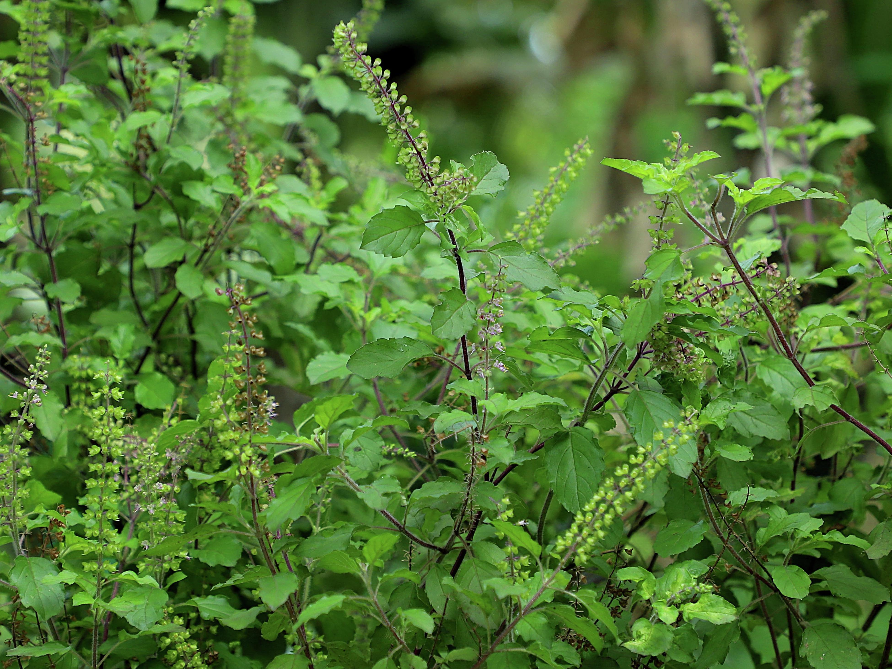
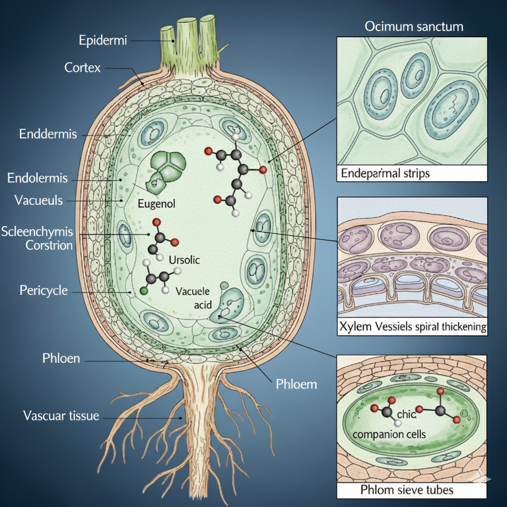
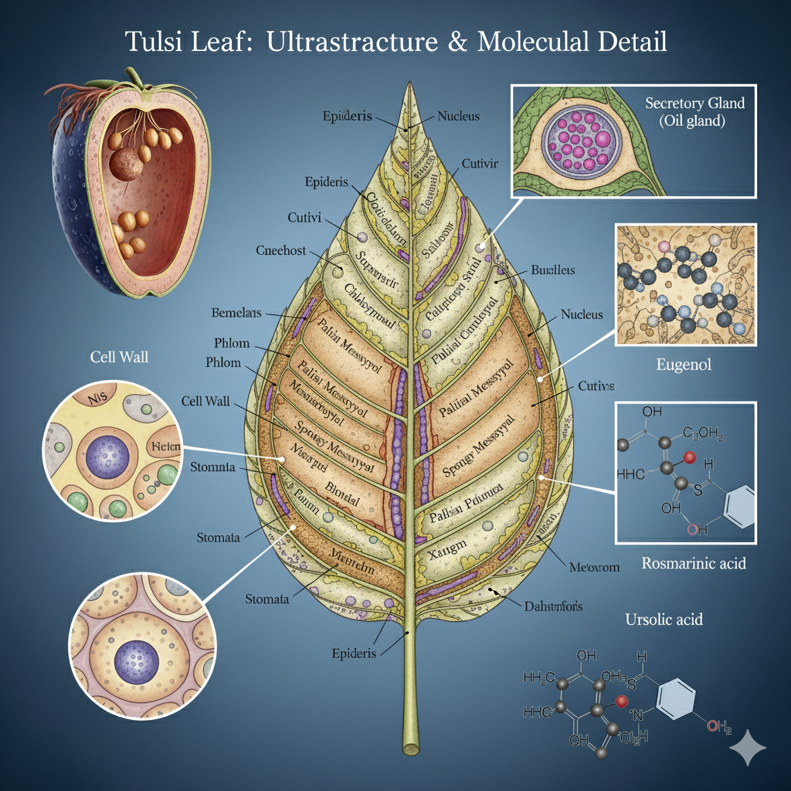
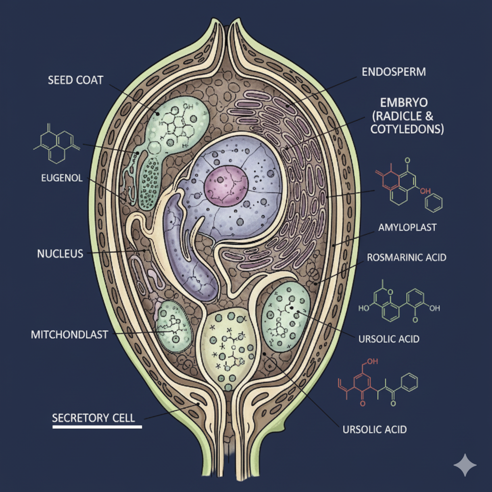

Scientific Name: Ocimum sanctum
Common Names: Holy Basil, Sacred Basil
Family: Lamiaceae
Parts Used:Leaves, seeds, roots
Medicinal Uses:Respiratory health, immunity booster, adaptogen.
Benefits: Clears respiratory tract, boosts vitality, reduces stress.
Precautions: Excess may aggravate Pitta (heat, acidity).
Rasa: Bitter, pungent
Guna: Light, dry
Virya: Heating
Vipaka: Pungent
Dosha Effect: Balances Vata and Kapha,may increase Pitta

Parts Used

Tulsi Roots
The roots of Tulsi are aromatic and contribute to the medicinal qualities of the plant, though less used than leaves and seeds.
Morphology
- Taproot system, slender, branched, and fibrous.
- Brownish externally, whitish internally.
- Aromatic odor; taste slightly bitter and pungent.
Microscopic Features
- Cork with several layers of brownish cells.
- Cortex of parenchymatous cells containing oil globules.
- Xylem with spiral and reticulate vessels.
- Medullary rays connecting cortex and vascular tissue.
Chemical Constituents
Essential oils (eugenol, methyl eugenol, carvacrol), ursolic acid, flavonoids, and triterpenoids.
Medicinal Properties
- Antimicrobial and antifungal activity.
- Adaptogenic and stress-relieving effect.
- Anti-inflammatory and analgesic properties.
Uses
Root decoction is used in traditional medicine for fever, skin diseases, and nervous disorders.

Tulsi Leaves
The leaves are the most important medicinal part of Tulsi, widely used in Ayurveda for respiratory, digestive, and immune health.
Morphology
- Simple, opposite, ovate leaves, 2–4 cm long.
- Margins serrated, surface hairy.
- Green or purplish depending on variety (Krishna Tulsi or Rama Tulsi).
- Aromatic fragrance due to essential oils.
Microscopic Features
- Upper and lower epidermis with glandular trichomes.
- Stomata diacytic type.
- Mesophyll differentiated into palisade and spongy parenchyma.
- Oil glands secreting eugenol and other volatile oils.
Chemical Constituents
Essential oils (eugenol, methyl chavicol, linalool), flavonoids, tannins, and vitamin C.
Medicinal Properties
- Antimicrobial, antifungal, and antiviral.
- Immunity booster and adaptogen.
- Anti-inflammatory and antioxidant.
- Relieves cough, cold, and asthma.
Uses
Fresh leaves chewed for immunity; decoction used for cough, fever, and digestive issues; paste applied externally for skin infections.

Tulsi Seeds (Sabja Seeds)
Tulsi seeds, also called Sabja or Basil seeds, are cooling in nature and used in Ayurveda for digestion and pitta balance.
Morphology
- Small, black, oval-shaped seeds.
- Swells and becomes mucilaginous when soaked in water.
- Odorless and tasteless.
Microscopic Features
- Seed coat with mucilage cells.
- Endosperm rich in fixed oil and protein.
- Embryo curved within the endosperm.
Chemical Constituents
Mucilage (polysaccharides), fixed oils (linoleic acid, oleic acid), proteins, flavonoids, and essential oils.
Medicinal Properties
- Cooling and soothing effect on digestive system.
- Demulcent and anti-ulcer properties.
- Helps in weight management and blood sugar control.
Uses
Consumed soaked in water or milk as a coolant; used in Ayurveda for acidity, constipation, and urinary disorders; added to beverages like falooda and sherbets.